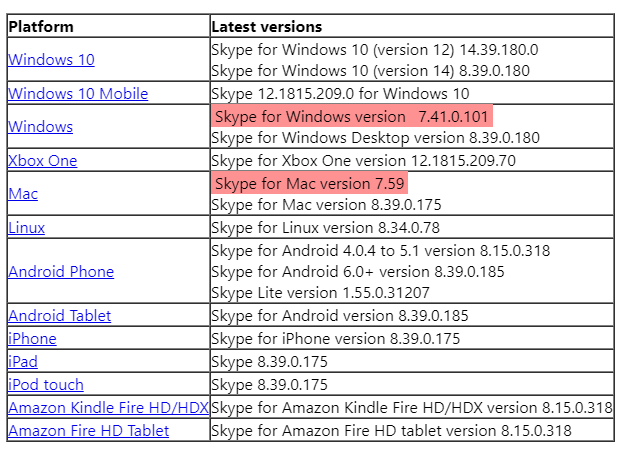

さようなら、Skype 7
公開日：

- Skype for Windows version 7.41.0.101
- Skype for Mac version 7.59
の両バージョンが Skype のリリースプラットフォームページから消えた。これで Skype 7（つまり Classic 版）は完全に終わり、Skype 8 へ移行することになる。
あまり評判は良くないけど、個人的に Skype 8 は悪くないと思ってる。ユーザーインターフェイスはウェブ、モバイル、デスクトップで共通化されているし、旧バージョンのすべての機能を網羅しているわけではないが、先進的な機能*1が積極的に導入されている。できれば LINE なんかやめてしまいたいのだけど*2、スタンプへの投資がある以上、なかなかむずかしいのだろうな。LINE では地味に Markdown が使えたりするけど、Skype はダメみたいなところはまだあるし。